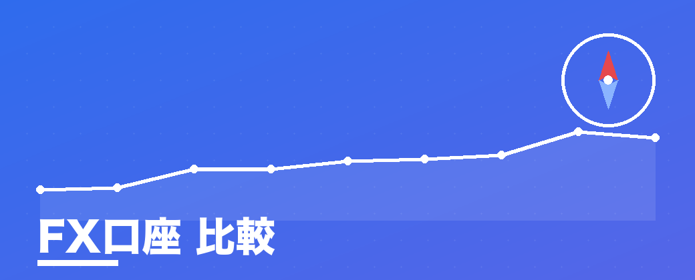
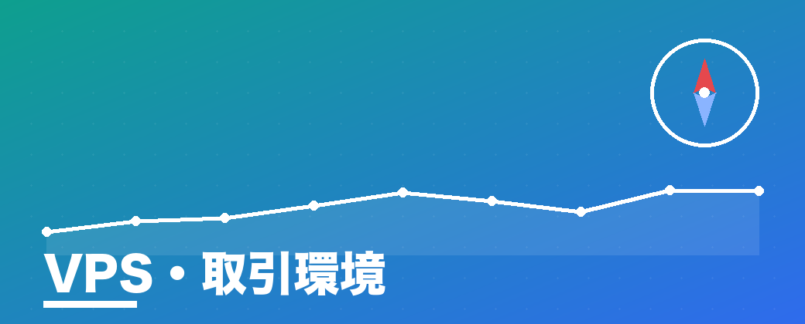
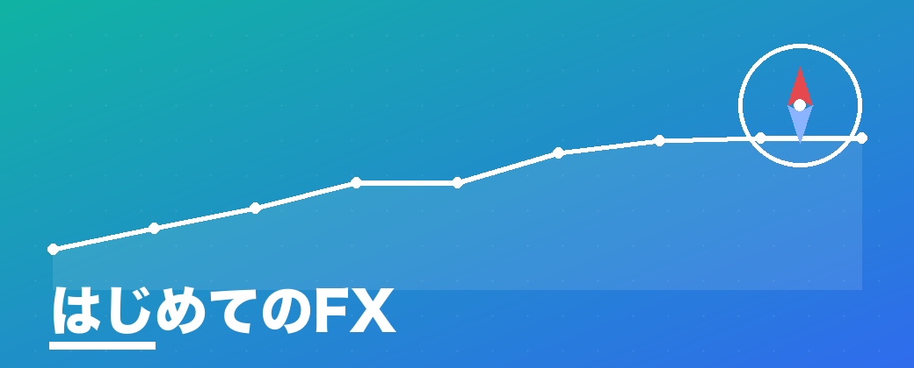
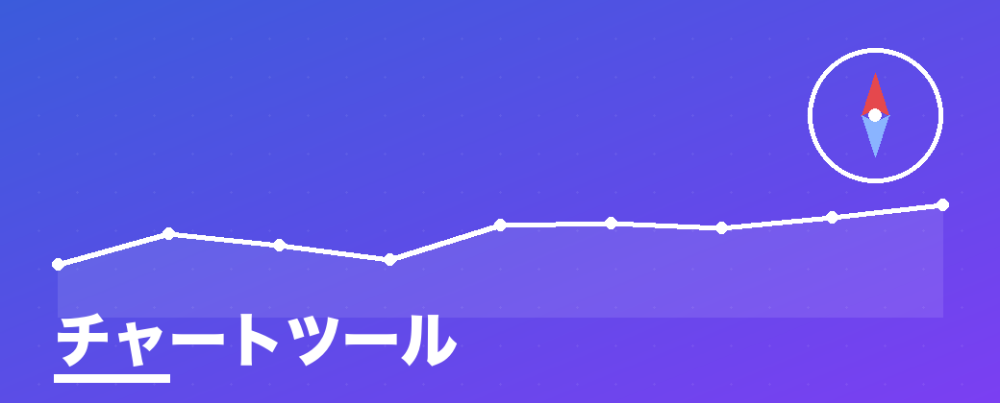
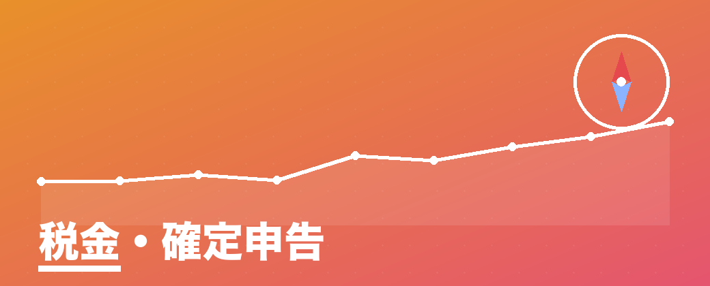
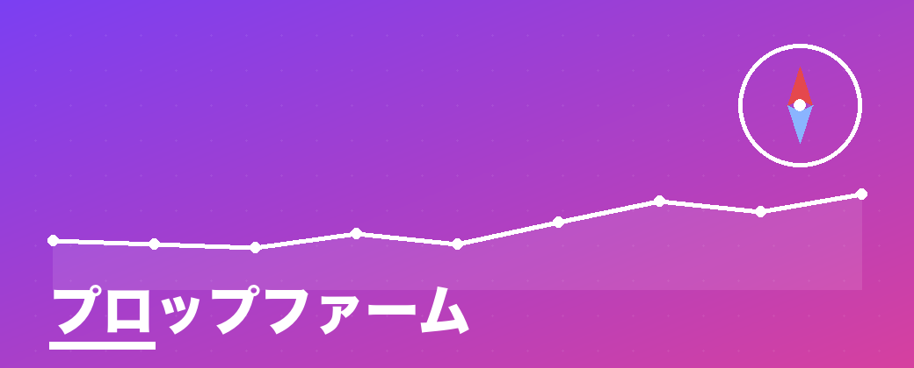

特集・口座比較
国内FX口座おすすめ徹底比較【2026年6月】
手数料・スプレッド・最小取引単位・キャンペーンを実数で整理。初心者が「最初の1社」を選ぶための比較ランキング。
比較ランキングを見る →新着・注目の記事 LATEST
最高単価のVPS環境から、初心者の口座選びまで。検索意図のはっきりしたテーマを、出典付きで。
-

VPS・取引環境 NEW FX VPSはどれが最安？料金・スペックを実数で客観比較【2026年6月】 - 自動売買 NEW FX自動売買（EA）の始め方｜国内で合法に始める手順とVPS環境
-

はじめてのFX NEW FXはいくらから始められる？少額1000円〜の現実と失敗しない始め方 -

チャート NEW TradingView有料プランは必要？無料との違いと一番お得な買い方 - VPS・取引環境 NEW MacでFXは不利？MT5が使えない問題をVPSで解決する全手順
- はじめてのFX FXの始め方 完全ガイド｜仕組み・必要資金・口座開設の流れ
-

税金・確定申告 FX・トレードの税金と確定申告ガイド（個別判断は税理士へ） -

プロップファーム 「やめとけ・怪しい」と言われるプロップのリスクと失敗パターン
目的から探す BY GOAL